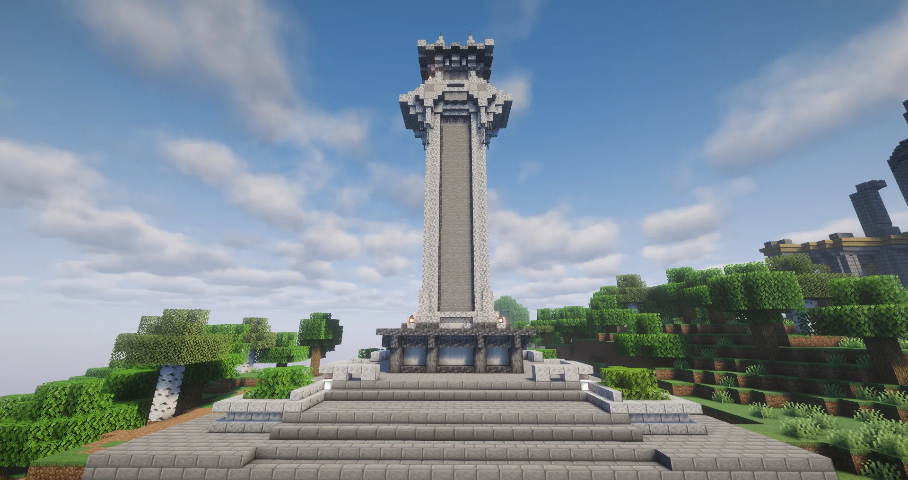

⚙️
机械动力Create
用齿轮、传送带与流水线搭建属于你的自动化工厂。风车、蒸汽机、列车，一切都能亲手造出来。
Minecraft Java 版 1.21.1 · NeoForge 综合模组生存。
以 机械动力 为骨、森罗物语 为脉，搭配 灾变、精致储存、车万女仆 等模组——
不打竞技、不逼氪，有死亡不掉落，主打一个慢慢建、安心养老。
服务器运营靠服主自费与玩家赞助，配置不算豪华，但完全够用：我们更在意长期稳定、存档不炸、随时能上。
/pvp on / /pvp off 可开关 PvP：双向生效，关闭后既不会被打也无法打人；关闭需要 1 分钟才完全生效（提示为英文，请自行辨认）。小柿服务器模组包 v1.3.4 · Minecraft 1.21.1 + NeoForge · 推荐使用直链，网盘为备用。
.mrpack 即可。.minecraft/mods。旧版本仅作存档保留，长期留在旧版本可能无法进入服务器；能更新就尽量更新到最新版。
saves 文件夹整体复制一份到别处；
如果有服务器存档或重要建筑，建议连带 config、xaero（小地图）一起备份。
出问题时能直接回滚，比重装快得多。
mods 文件夹（缺一个都可能进不去服）：
mods 文件夹里按名称排序扫一眼，确认没有重复版本。
config 文件让它重新生成即可。下面是本服的几个主打方向，其余模组进服后慢慢发现也不迟。
用齿轮、传送带与流水线搭建属于你的自动化工厂。风车、蒸汽机、列车，一切都能亲手造出来。
容量更大、还能升级的箱子与背包，配合漏斗、抽取升级，把杂乱仓库整理得明明白白。
为世界加入强力的 BOSS 与地牢挑战，装备成型后拉上伙伴一起去开荒，成就感拉满。
大量自然与和风装饰方块、植物与建材，把房子、庭院和街道做出真正的生活感。
招募可爱的女仆帮你打理农田、整理箱子、陪同冒险，也可以静静坐在院子里当个听众。
可合成各类乐器，鼠标手动弹奏或接入 MIDI 键盘演奏，也支持 .mid 文件自动播放。
全部截图来自服内真实景点，点开可以看大图。
服务器已安装 SkinRestorer，离线账号与第三方登录也能正常显示皮肤。
/ 开头的命令即可更换皮肤。# ① 套用某个正版玩家的皮肤（把 PlayerName 换成对方 ID） /skin set mojang PlayerName # ② 使用 LittleSkin 皮肤站（把 SkinName 换成角色管理中对应的角色名） /skin set littleskin SkinName # 如果出现 HTTP connect timed out的提示，为网络的问题，请等待或更换自定义皮肤站 # ③ 使用皮肤展开图直链（自定义皮肤站用这个） /skin set web classic/slim https://abc.com/xxx/xxxx # classic / slim 二选一：classic 为粗壮模型，slim 为纤细模型。 # 把链接换成该皮肤的展开图直链，只要能被直接读取即可。 # ④ 清除当前皮肤，恢复默认 /skin clear
保护你的家，也把空间留给别人；打不打，由你自己决定。
默认情况下你既不会被打，也不能打人。想和朋友切磋，用指令打开就行。
/pvp on 开启 PvP，之后你可以攻击他人，他人也可以攻击你。/pvp off 关闭 PvP——注意这不是立刻生效，见下方说明。/pvp off 后，需要 1 分钟 才会完全关闭；这是为了防止有人打不过就立刻关掉 PvP 逃跑。按住一个键，一次挖掉一整片——挖矿、清地、拆建筑都快很多。
服务器已内置 Limitless Concert 模组，合成、放置、弹奏，三步开启你的 MC 音乐会。
.mid 文件，放进游戏目录的
config/limitless_concert/mid 文件夹，回到乐器界面点击「选择 mid 文件」选中它，再点击「打开 Mid 文件」即可自动播放。.mid 格式、已放进正确的 mid 子文件夹，并重开乐器界面刷新。服务器没有充值、没有付费特权，服务器的运行，应感谢下面这些人。

这台服务器是纯公益、无氪金的：几乎没有收益。 硬件、带宽、维护的每一分钱，都是很多人为爱发电—— 他们本可以什么都不做，却选择让这个地方继续存在下去。
每一笔赞助都会被用在服务器上：续费机器、升级配置、备份存档。 这不是一笔交易，而是一份信任，我们会认真地把它花在该花的地方。
服内事务、领地争议、bug 反馈都可以直接找他们。
仅通过以下两种方式联系，其他渠道均非官方。